Ethercat开源主站(soem)禾川伺服csp模式测试
Ethercat开源主站(soem)禾川伺服csp模式测试
1.Ethercat基础介绍
EtherCAT（Ethernet for Control Automation Technology）是一种基于以太网的实时工业现场总线通讯协议，由德国倍福公司提出并研发投入使用，2003 年引入市场，2007 年成为国际标准，2014 年成为中国国家标准，并在中国成立EtherCAT 一致性检测中心，为 EtherCAT 技术在中国的发展和应用奠定了一定的基础。
EtherCAT 作为实时工业以太网技术和标准，发展迅速，由于其具有传输距离远、传输速度快、连接的从站设备可达65535个、灵活的网络拓扑结构等优势近年来被广泛关注。EtherCAT 采用全双工通信，最大限度地利用网络带宽，报文带宽利用率大于 90%，数据传输速率接近 100Mb/s；通过一个以太网帧，可以传输 1486 字节的有效过程控制数据，相当于约 12000 个数字量 IO，而这些数据量的传输仅需要几百微秒甚至几十微秒。例如，EtherCAT 对于 256 个数字 IO 刷新时间为 11us；100 节点上 1000 个开关量刷新时间 30us；100 个伺服轴刷新时间也只有 100us。EtherCAT 技术支持的分布式时钟也为各个从站设备提供了同步性，例如将用于机器人的各个伺服轴作为从站，轴之间的同步时间偏差小于 1us，为各个轴的插补运动控制提供了基础。EtherCAT 不需要提供专门的硬件设备与配置，使其成本低廉，使用方便，加之其高实时性，在工业自动化、物联网应用等领域中 EtherCAT 技术的使用正在成为一种趋势。
EtherCAT的核心技术在于从站设备层，主站通信可是任何Ethernet标准设备，与网络帧区别于特殊帧头，数据帧结构大体类似。下图为倍福EtherCAT从站控制芯片(ESC)，虽说后续有新产品新功能问世，但也保留最初ET1100大部分特性(保留一代芯基础寄存器配置),市面上常用的美国微芯(lan9252),台湾亚信(AX58100) EtherCAT控制芯片都采用标准寄存器配置。了解ET1100可以很快熟悉从站配置流程，以及获取准确的设备运行状态。
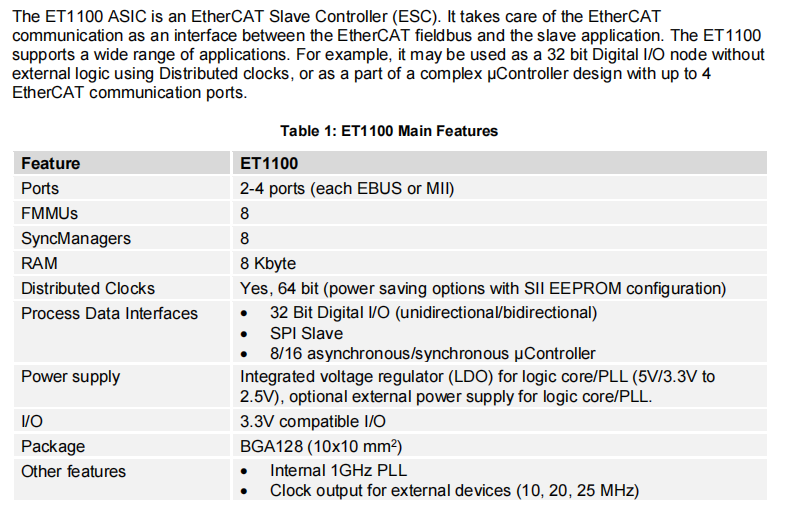
EtherCAT从站通信控制器(ESC,EtherCAT Slave Controller),负责处理Ethercat数据帧，并使用双端口存储区实现主从站本地应用数据交换。ET1100支持两种物理接口：MII和EBUS。 MII是标准以太网物理层接口，定义与传输介质无关的标准电气接口。MII模式配合物理层芯片(PHY，用于数据编码、译码、收发),即可完成数据交互。EBUS是倍福公司根据LVDS(Low Voltage Differential Signaling)标准定义的数据传输协议，不需要额外物理层芯片，可以直连ESC芯片，避免了物理层附加延时。ET1100 过程数据接口(PDI,Process Date Interfaces)支持3种通信控制方式，IO模式，即无需外部MCU可直接使用32路引脚用作IO控制。SPI模式，ESC作为SPI从站与MCU连接，单片机通过SPI总线对ESC进行读写配置。同步或异步总线模式，通过8/16路数据地址总线对ESC进行操作(类似内存读写操作)，实现数据交互以及配置。
2.EtherCAT 主站控制流程
EtherCAT状态机(ESM, EtherCAT State Machine),负责协调主站和从站应用程序在初始化和运行时的状态关系及转换；从初始化状态至运行状态，必须按照“初始化->预运行->安全运行->运行”的顺序转化,从运行状态逆向返回时可以越级转化。
主站系统采用标准以太网协议，不依赖于专用芯片，只要满足Ethernet通信的单片机，PC，工控机等设备，就可以实现ESC设备的通信控制。目前最流行的两大EtherCAT开源主站框架：SOEM，IGH。即在嵌入式设备，PC终端借助Ethernet以太网实现EtherCAT主站功能。
首先，明白从站状态机有那些模式，以及不同模式下开启的功能和可执行的操作方式。
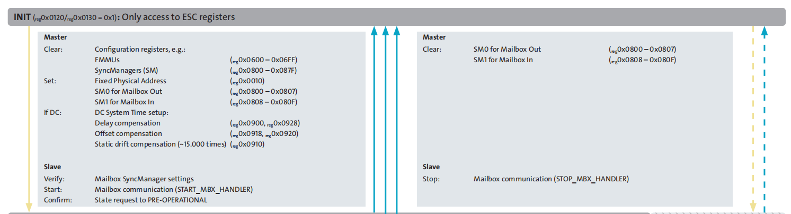
ESC从站设备上电后处于INIT模式，INIT模式下主站首先会执行清理配置寄存器的操作，主要涉及FMMU寄存器(内存管理单元，将从站物理地址与应用层逻辑地址进行映射，0x0600-0x06ff为从站寄存器地址)和同步管理器SM(用于主从站应用程序数据交互)，其次，配置从站地址(0x0010)，发送接收邮箱对应寄存器(0x0800-0x080f),对于DC模式下的设备(伺服电机周期模式)，需要设置DC分布式时钟控制器寄存器，INIT模式下这部分主要是读取系统时钟，计算时钟偏差配置从站本地时钟。从站的SM同步管理器被配置、邮箱切换运行状态，状态机请求切换到P-OP状态(PRE-OPERATIONAL).
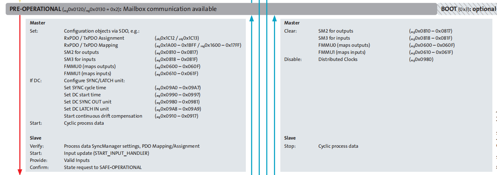
初始化完成后，从站会运行在P-OP状态，此状态下主站需要配置从站PDO映射(涉及SM同步管理器、FMMU内存管理单元相关寄存器配置)，以及DC模式下同步模式、同步周期等操作。P-OP模式下邮箱被激活，输入数据有效，SDO在此模式下通常用于配置PDO映射。从站响应配置后，主站将发生P-OP到S-OP状态切换请求。
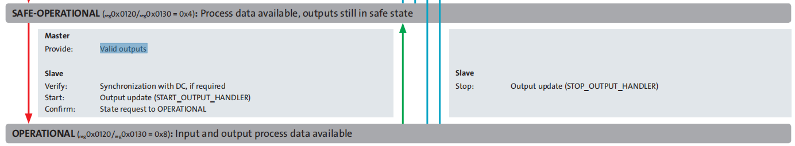
S-OP状态下主站对从站的配置工作基本完成，此时过程数据有效，但输出处于安全态。此时运动指令不会被电机、伺服响应。从站保持与主站基本通信连接(心跳数据、特殊标志寄存器状态轮询)，等待主站发生S-OP 到OP状态请求。一但从站切换到OP状态，PDO数据将会被电机响应，电机正常运动。
3.PDO映射关系
PDO映射主要在过程数据通信时，将用户层逻辑地址与设备层地址联系起来，用户层在操作设备时，无需关系设备物理地址，只需往映射的逻辑地址内存写入数据并发生，从站会自动提取网络数据帧中对应的字段数据执行，简化用户层的操作，提高通信速率。
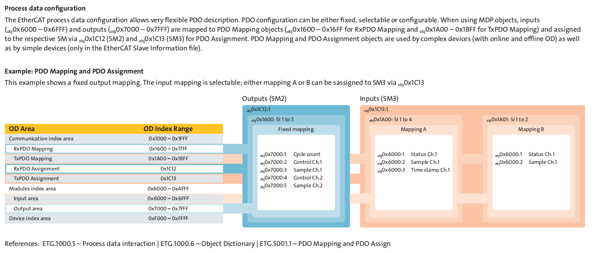
每个PDO在对象字典中用2个对象描述，分别是PDO通信参数和映射参数。
- 1） PDO通信参数：定义该设备所使用的COB-ID、传输类型、定时周期。
- 2） PDO映射参数：包含一个对象字典中的对象列表，这些对象映射到相应的PDO，其中包括数据的长度。对于生产者和消费者，只有知道这个映射参数，才能够正确地解释PDO的内容。PDO内容是预定义的，如果PDO支持可变PDO映射，那么可以通过SDO进行配置。
PDO 映射地址存在范围，RxPDO 地址是0x1600-0x17ff ,TxPDO 地址范围0x1a00-0X1BFF 理论上只要映射条目不超过地址范围，都是有效映射。但实际中不同厂家设备多少有些差异(与从站设备有关)。上图展示基本PDO映射流程。主要涉及三部分，Mapping区，Assignment区，对象字典。Mapping区分为发送区和接收区，通过地址区分，存放的是映射条目组,0x1600为起始地址也是第一组组地址，组内数据为对象字典条目地址(如0x604000010，0x607A0020，上图0x7000,0x6000属于开放区域地址，换句话来说，此地址可以在从站设备单片机程序中内修改替换，但用户必须和从站设备匹配)，Assignment区主要对应的是SM2,SM3同步管理器PDO数据收发区域，SM0,SM1为邮箱的收发区。SM2,SM3内存放的是Mapping区条目地址。这很好理解，上述说到逻辑地址与物理地址映射需要FMMU单元来实现，FMMU主要是将SM区条目映射到用户逻辑地址，SM区条目又与设备物理地址存在映射关系，即整个物理地址与用户逻辑地址具备完整映射关系。
以禾川电机举例：RXPDO通信参数保存在0x1c12，映射参数地址0x1600-0x17ff，可以将0x1600.01设置为0x604000010，表示长度为0x10(16) 位的0x6040.00(控制字)映射到0x1600.01；将0x1600.02设置为0x607A0020，表示长度为0x20(32) 位的0x607A.00(控制字)映射到0x1600.02。4.抓包分析
EtherCAT可以使用wireshark抓包工具进行以太网抓包，对于EtherCAT专用设备转接卡的主站设备，抓包可能存在问题。转接模块使用非本机网口的设备(PCI转接卡,USB卡等)，可串入交换机进行抓包测试。下述将举例说明，抓包调试基本方法。
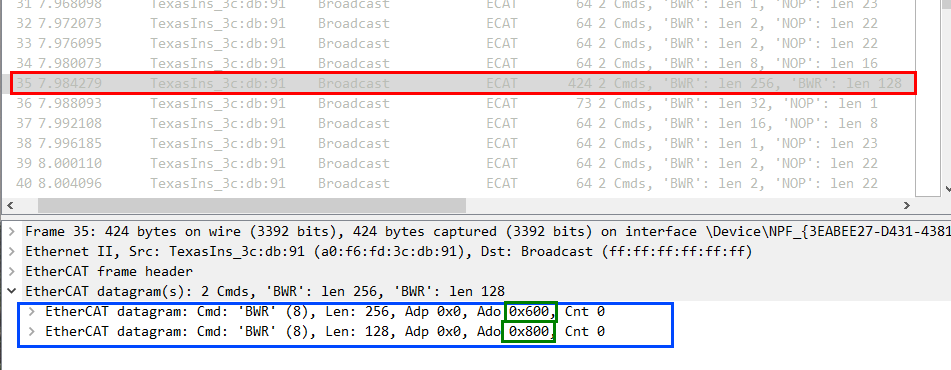
使用wireshark抓取工控机网口1数据，工控机使用SOEM库作为EtherCAT主站,初始化控制禾川EtherCAT伺服电机，抓取网口数据包，上图为其中一帧数据。EtherCAT datagram中,可以看到主站发起广播写命令(BWR)，寄存器FMMU逻辑单元(0x600),SM同步管理器(0x800)将被设置(图4-2，寄存器被清空，设备在INIT阶段主站执行操作，详见图2-1)。
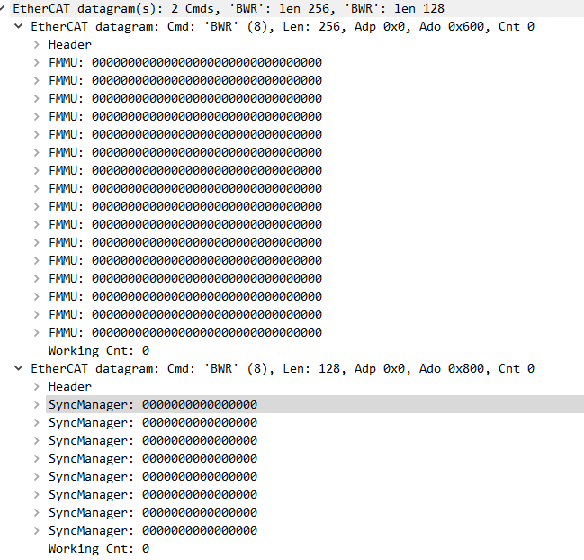
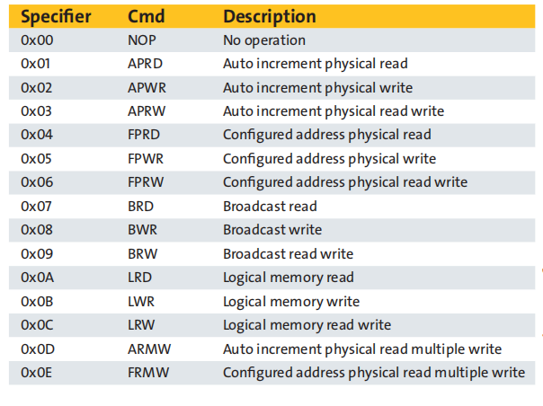
接着取一帧PDO映射部分数据帧，PDO映射首先要清除RPDP、TPDO、SM2 、SM3数据，然后再依次写入新的数据。具体操作如下，将0x1c12,0x1c13子索引0置位，0x1600,0x1a00子索引0置位，写入0x1600,0x1a00 子索引1，2，3…数据，将配置条目数写入子索引0，将0x1600,0x1a00对应写入0x1c12 ,0x1c13子索引1，配置子索引0条目数。
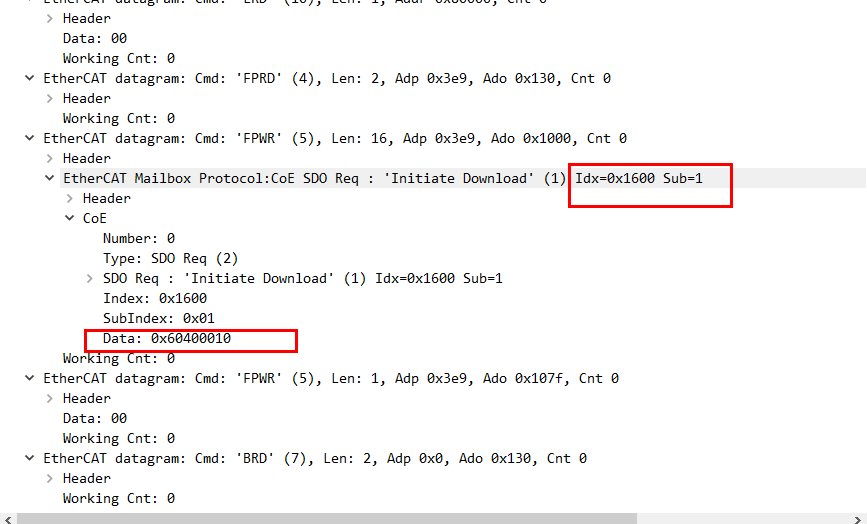
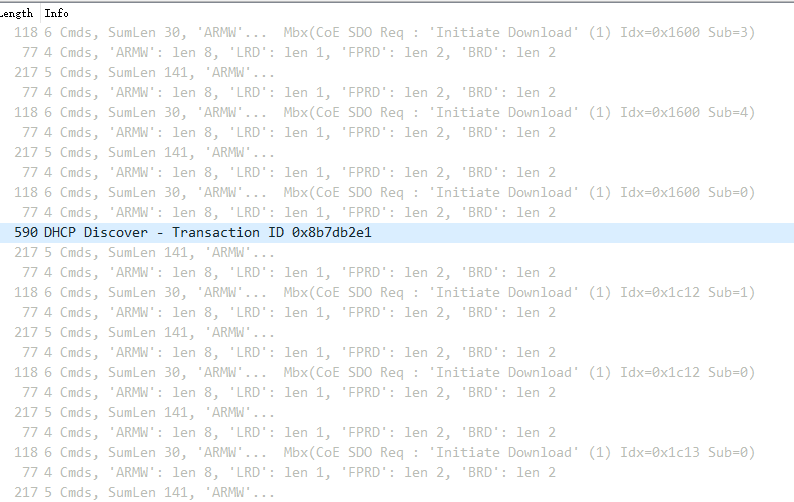
使用SOEM，IGH库可以实现嵌入式设备、PC端主站控制系统开发，搭配实时内核、嵌入式微内核，主站同步周期可缩短至微秒级(与挂载设备数量也存在一定关系，网口数据转发也需要耗时)。在嵌入式linux终端(树莓派4)上测试SOEM控制禾川6轴伺服，1ms周期插补无压力。
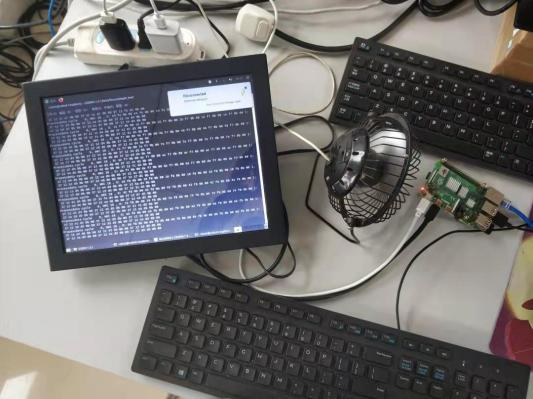 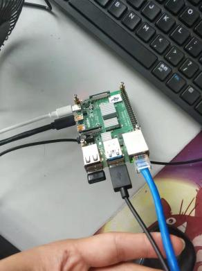